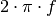
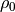
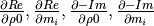

lib_dd package¶
Subpackages¶
Submodules¶
lib_dd.Jacobian module¶
Copyright 2014-2017 Maximilian Weigand
This program is free software: you can redistribute it and/or modify it under the terms of the GNU General Public License as published by the Free Software Foundation, either version 3 of the License, or (at your option) any later version.
This program is distributed in the hope that it will be useful, but WITHOUT ANY WARRANTY without even the implied warranty of MERCHANTABILITY or FITNESS FOR A PARTICULAR PURPOSE. See the GNU General Public License for more details.
You should have received a copy of the GNU General Public License along with this program. If not, see <http://www.gnu.org/licenses/>. Jacobian implementation for a Debye-Decomposition style function Resistivity formulation
-
lib_dd.Jacobian.Jacobian(omega, pars, s, partials)[source]¶ Calculate the Jacobian matrix for a given set of parameters m and relaxation times s (
 ).
).- Parameters
omega (Angular frequencies ) –
pars ( and
 values in the parmeterisation) – (linear,log10) of the provided partials
values in the parmeterisation) – (linear,log10) of the provided partialss (
 values in log10) –
values in log10) – partials (List of the four partial derivative functions) – 
- Returns
The derivatives of d Re(rho)/d g_i and d -Im(rho)d g_i in form of a
2*K x P matrix (K = number of frequencies), (P = number of model
parameters)
lib_dd.base_class module¶
Copyright 2014-2017 Maximilian Weigand
This program is free software: you can redistribute it and/or modify it under the terms of the GNU General Public License as published by the Free Software Foundation, either version 3 of the License, or (at your option) any later version.
This program is distributed in the hope that it will be useful, but WITHOUT ANY WARRANTY without even the implied warranty of MERCHANTABILITY or FITNESS FOR A PARTICULAR PURPOSE. See the GNU General Public License for more details.
You should have received a copy of the GNU General Public License along with this program. If not, see <http://www.gnu.org/licenses/>.
-
lib_dd.base_class.determine_tau_range(settings)[source]¶ Return the tau values depending on the settings ‘Nd’, ‘tau_values’ and ‘tau_sel’ in the dict ‘settings’
- Tau values can be set by using one of the following strings in
self.settings[‘tausel’]:
data data_ext factor_left,factor_right ,factor_right factor_left,
- Missing values are replaced by one (i.e. the data frequency limits are
used).
-
lib_dd.base_class.get_tau_values_for_data(frequencies, Nd, factor_left=1, factor_right=1)[source]¶ Return the
values corresponding to the frequency range of
the data set.- Parameters
Nd (number of
values per decade) – factor_left (factor to divide to the lower limit by) –
factor_right (factor to multiply to the upper limit) –
- Returns
- Return type
tau,s with
-
class
lib_dd.base_class.integrated_parameters[source]¶ Bases:
objectComputation of integrated paramters. This class is not meant to be used alone, it is meant to be inherited by ‘dd_resistivity_skeleton’
 ,
,  ,
,
 ,
,  ,
, 
-
class
lib_dd.base_class.starting_pars_3(re, mim, frequencies, taus)[source]¶ Bases:
objectHeuristic nr 3 for determining useful starting values for the fit.
This function is aware if the conductivity or resistivity formulation is used.
lib_dd.int_pars module¶
Copyright 2014-2017 Maximilian Weigand
This program is free software: you can redistribute it and/or modify it under the terms of the GNU General Public License as published by the Free Software Foundation, either version 3 of the License, or (at your option) any later version.
This program is distributed in the hope that it will be useful, but WITHOUT ANY WARRANTY without even the implied warranty of MERCHANTABILITY or FITNESS FOR A PARTICULAR PURPOSE. See the GNU General Public License for more details.
You should have received a copy of the GNU General Public License along with this program. If not, see <http://www.gnu.org/licenses/>.
Integrated parameters
pars: linear representation of parameters
-
lib_dd.int_pars.U_tau(pars, tau, s)[source]¶ compute uniformity parameter similar to Nordsiek and Weller, 2008:

 values can be computed using the
environment variable DD_TAU_X: The string separates the requested
percentages as fractions with ‘;’ characters.
values can be computed using the
environment variable DD_TAU_X: The string separates the requested
percentages as fractions with ‘;’ characters.lib_dd.interface module¶
Copyright 2014-2017 Maximilian Weigand
This program is free software: you can redistribute it and/or modify it under the terms of the GNU General Public License as published by the Free Software Foundation, either version 3 of the License, or (at your option) any later version.
This program is distributed in the hope that it will be useful, but WITHOUT ANY WARRANTY without even the implied warranty of MERCHANTABILITY or FITNESS FOR A PARTICULAR PURPOSE. See the GNU General Public License for more details.
You should have received a copy of the GNU General Public License along with this program. If not, see <http://www.gnu.org/licenses/>.
Functions common to the Cole-Cole decomposition implementations ccd_single, ccd_time.
-
lib_dd.interface.aggregate_dicts(iteration_list, dict_name)[source]¶ For a given list of NDimInv iterations, aggregate the dictionaries with name ‘dict_name’ (Iteration.dict_name) and return one dict containing the values of all iterations as lists.
-
lib_dd.interface.get_command()[source]¶ Return a string with the full command call, including environment variables.
Environment variables are exported in separate lines
-
lib_dd.interface.load_frequencies_and_data(options)[source]¶ Load frequencies and data from options.frequency_file and options.data_file. Apply certain processing steps such as:
frequency filtering
magnitude normalization
- Parameters
options (object as created by optparse (e.g. provided by dd_single.py or) – dd_time.py)
- Returns
data (data dict)
options (the options object can be changed by this function, e.g. when the) – data type is changed.
-
lib_dd.interface.prepare_stat_values(raw_values, key, norm_factors)[source]¶ Prepare stat_pars for saving to disc.
This included renormalization or padding for specific keys.
Divide the statistical parameter rho0 by norm_factors and multiply m_tot_n by them.
- Parameters
raw_values (NxM array, N: number of spectra, M: number of parameters) – values of given parameter
key (str) – identifier for the parameter type, e.g. rho0, tau_mean, …
norm_factors (numpy.ndarray) – norm factors for the inversions
- Returns
values – modified values
- Return type
NxM array, N: number of spectra, M: number of parameters
lib_dd.plot module¶
Copyright 2014-2017 Maximilian Weigand
This program is free software: you can redistribute it and/or modify it under the terms of the GNU General Public License as published by the Free Software Foundation, either version 3 of the License, or (at your option) any later version.
This program is distributed in the hope that it will be useful, but WITHOUT ANY WARRANTY without even the implied warranty of MERCHANTABILITY or FITNESS FOR A PARTICULAR PURPOSE. See the GNU General Public License for more details.
You should have received a copy of the GNU General Public License along with this program. If not, see <http://www.gnu.org/licenses/>.
-
class
lib_dd.plot.plot_iteration[source]¶ Bases:
objectThis class defines an override function for the default plot function of the Iteration class. The new plot function is aware of the Cole-Cole Decomposition approach and will plot more information (i.e. the RTD)
In addition, it will renormalize data if necessary.
lib_dd.plot_stats module¶
lib_dd.starting_parameters module¶
-
class
lib_dd.starting_parameters.starting_parameters[source]¶ Bases:
object-
estimate_starting_parameters_1(re, mim)[source]¶ Heuristic 1 to generate a suitable starting distribution for a fit
TODO: Florsch et al. 2014 has a name for this kind of heuristic…
-
lib_dd.test_functions module¶
Copyright 2014-2017 Maximilian Weigand
This program is free software: you can redistribute it and/or modify it under the terms of the GNU General Public License as published by the Free Software Foundation, either version 3 of the License, or (at your option) any later version.
This program is distributed in the hope that it will be useful, but WITHOUT ANY WARRANTY without even the implied warranty of MERCHANTABILITY or FITNESS FOR A PARTICULAR PURPOSE. See the GNU General Public License for more details.
You should have received a copy of the GNU General Public License along with this program. If not, see <http://www.gnu.org/licenses/>.
-
lib_dd.test_functions.assert_single_t_rms_pos_change(rms_old_result, rms_new_result, allowed_percentage)[source]¶ Wrap assertTrue statements around the function
-
lib_dd.test_functions.single_t_rms_pos_change(rms_old_result, rms_new_result, allowed_percentage)[source]¶ Process one spectrum as described in the documentation of t_rms_pos_change
- Parameters
rms_old_result (list/array with 3 entries containing the RMS-values from) – the last recorded dd fit: Overall RMS, Real part RMS, Imaginary part RMS
rms_new_result (list/array with 3 entries containing the RMS-values from) – the test dd fit: Overall RMS, Real part RMS, Imaginary part RMS
allowed_percentage (one percentage value for the allowed change) – between old and new result.
- Returns
rms_within_limit – allow percentage change, False for a larger deviation
- Return type
list with 3 bool entries; True for values within the
-
lib_dd.test_functions.t_rms_pos_change(old_result, new_result, allowed_percentage)[source]¶ Test for positive rms changes
- Parameters
old_result (dd directory containing the old run) –
new_rusult (dd directory containing the new run) –
allowed_percentage (percentage threshold for positive changes.) – If this variable is a list of length three the values will be treated as rms, rms_re, rms_im thresholds
lib_dd.version module¶
Copyright 2014-2017 Maximilian Weigand
This program is free software: you can redistribute it and/or modify it under the terms of the GNU General Public License as published by the Free Software Foundation, either version 3 of the License, or (at your option) any later version.
This program is distributed in the hope that it will be useful, but WITHOUT ANY WARRANTY without even the implied warranty of MERCHANTABILITY or FITNESS FOR A PARTICULAR PURPOSE. See the GNU General Public License for more details.
You should have received a copy of the GNU General Public License along with this program. If not, see <http://www.gnu.org/licenses/>.
Module contents¶
Overview lib_dd package